汽车市场形势分析会
这次由国家信息中心组织的形势分析会，是团队调研的第一站。连续两天的议程，把汽车市场放进了更大的宏观经济背景。

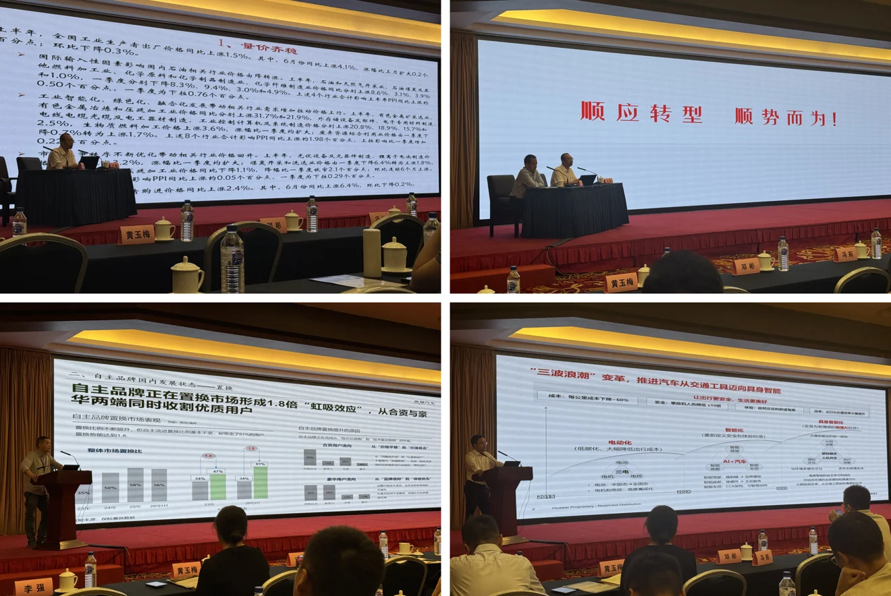
我们如何开展调研
我们从会上讨论的市场形势出发，把问题带到接下来的走访中：需求变化时，企业怎样调整生产，又怎样从终端获得反馈？
 智启新程实践队
智启新程实践队
2026.07.18 — 07.29
从北京到哈尔滨，走进生产现场，也坐到专家身边。

这次由国家信息中心组织的形势分析会，是团队调研的第一站。连续两天的议程，把汽车市场放进了更大的宏观经济背景。

我们从会上讨论的市场形势出发，把问题带到接下来的走访中：需求变化时，企业怎样调整生产，又怎样从终端获得反馈？
中国航空制造技术研究院研究员陈新松，从航空增材制造谈起，和我们讨论一项技术从研发走向工程应用所经历的验证。
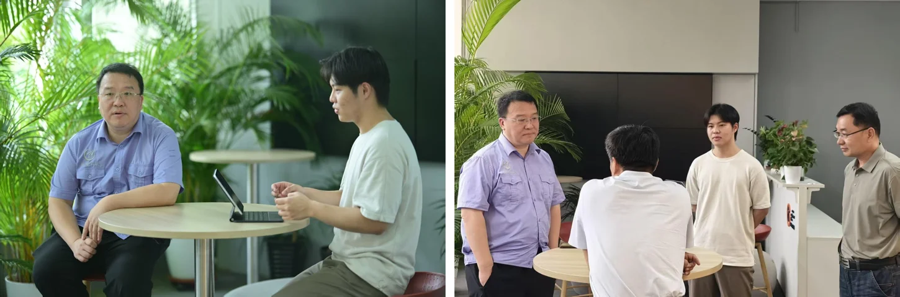
我们顺着“加工前能模拟什么”追问：设计方案怎样进入生产，关键工序又需要怎样验证？加工前模拟成为团队理解制造决策的一条具体线索。
韩梦瑶来自中国科学院地理科学与资源研究所。这次线上访谈把视角从单家工厂拉到产业空间和供应链。
我们围绕产业链碳风险、绿色转型与全球布局提问，讨论一个环节的变化怎样沿上下游传导，又如何影响企业所在地区。
中关村软件园聚集软件企业和产业服务机构，也是观察数字技术如何找到制造业应用场景的窗口。
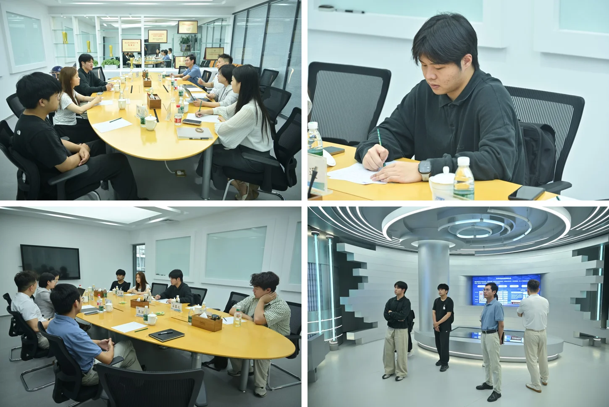
我们参访园区，并在座谈中把问题落到园区孵化与产业服务上：技术团队从哪里遇到需求，园区如何促成企业之间的合作？
规划展览馆从空间布局呈现海淀创新资源的分布，让园区、科研机构与产业载体之间的关系更直观。
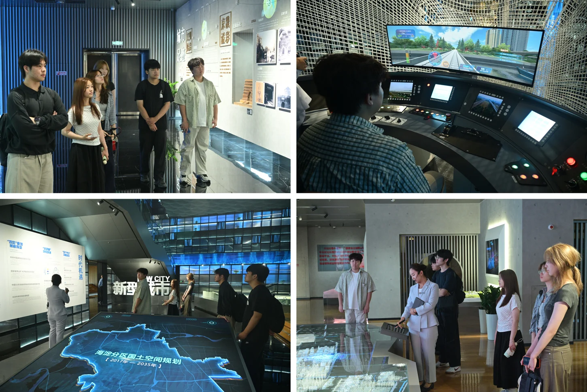
参观展陈时，我们关注创新资源如何集聚，以及承接成果转化需要哪些载体。当天的软件园座谈也为阅读这些规划提供了现场参照。
在新能源汽车销售与服务终端，制造业价值链呈现为消费者能够直接接触的产品、讲解与服务。
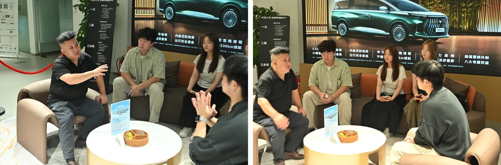
我们在门店观察车辆展示和产品体验，围绕用户需求、市场反馈和品牌传播进行访谈，再把这些问题带到次日的制造环节。
清华园车站保留了铁路工业的历史线索。团队在走进现代汽车产线前，先从铁路交通的旧址看工业技术的来路。
我们寻访旧址、观察建筑并阅读展陈，将铁路工业史与今天产业创新中的工程实践联系起来。
这处整车研发制造基地，让团队有机会把前一天在门店提出的产品问题带回生产现场。
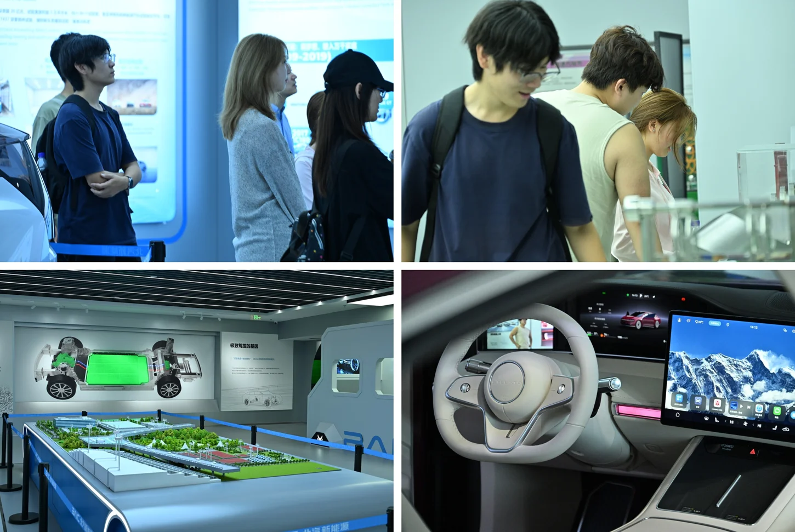
我们围绕智能产线与质量控制观察研发制造环节，并结合交流了解企业的全球化布局，把终端体验与生产组织放在一起考察。
这一站从制造企业转向研究机构，访谈集中在两岸经贸联系与产业协作。
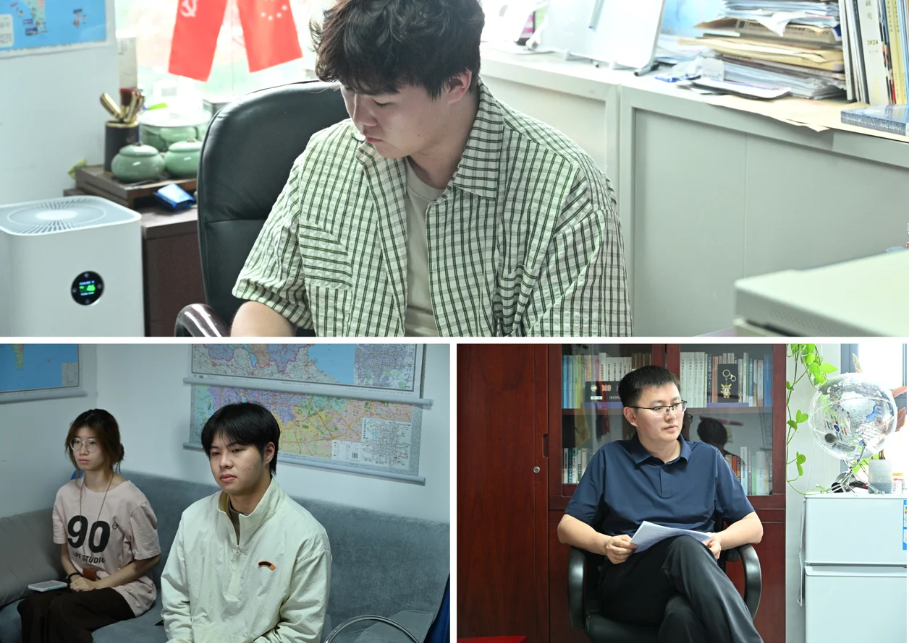
我们讨论外部环境变化如何影响产业合作，把跨区域协作补进对制造业转型的观察。
这里从中关村创新发展历程切入，展示企业成长与前沿技术成果。
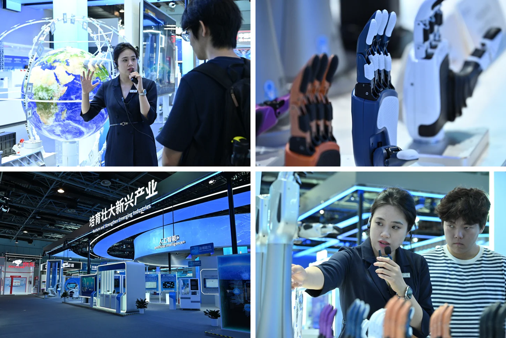
我们沿展陈了解技术成果与科技企业的发展，关注展示出来的技术走向实际应用还需要哪些条件。
区史馆记录了北京经济技术开发区的建设历程，也是理解制造企业为何在此集聚的一处起点。
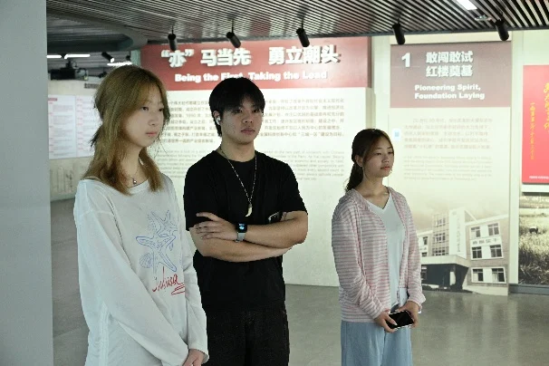
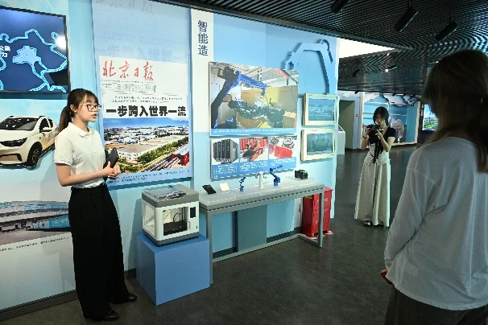
我们沿历史展陈追溯开发区建设，关注产业政策、园区建设和企业集聚的关系。当天随后走访的小米汽车工厂，为这段园区史提供了现实参照。
在汽车超级工厂，我们把观察对象从园区发展史缩小到一辆车的制造过程。
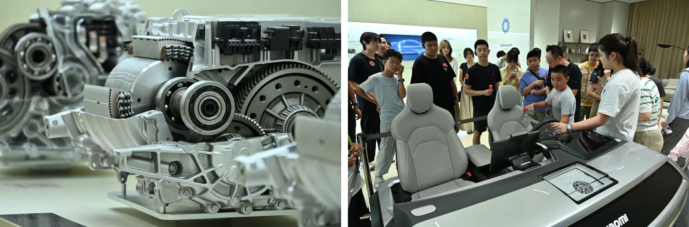
团队围绕自动化应用、生产组织和质量管理开展参访，关注智能设备如何配合工序要求，也从产品交付的角度理解品牌价值。
首钢园保留着传统钢铁工业的空间痕迹，也承接了新的文化、科技与公共活动。
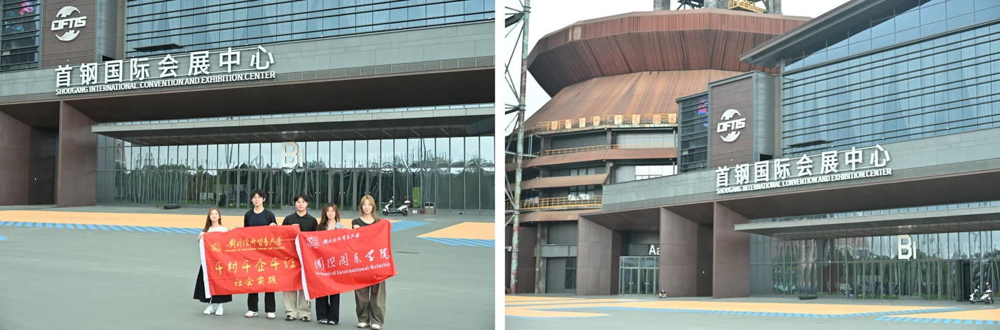
我们在园区考察工业遗存的再利用，对照过去的生产功能与今天的使用场景，讨论制造业价值如何从产品延伸到空间。
钢琴提供了与汽车不同的制造样本：材料、工艺与演奏体验共同影响人们对品质的判断。
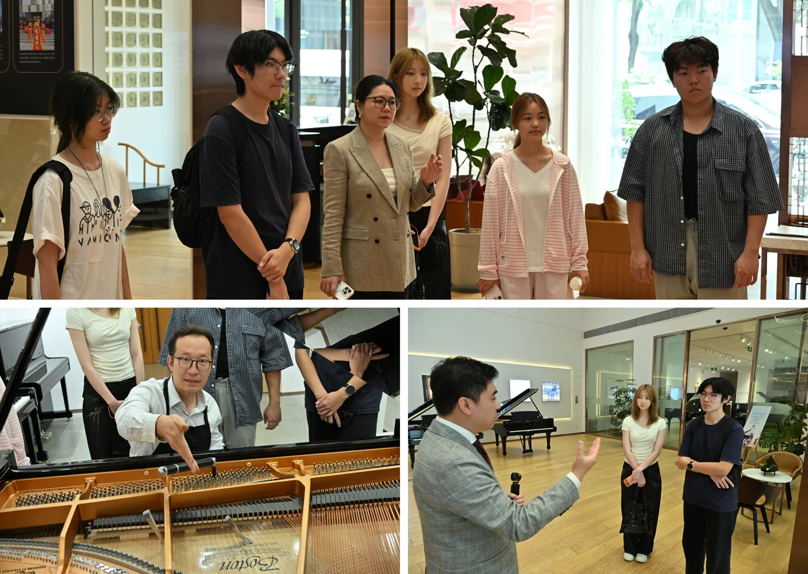
我们围绕钢琴工艺和产品体验开展调研，关注工艺传承、品质表达与品牌运营如何联系起来。
华烁集团董事长周雨与团队在线交流，从企业经营的角度谈科技成果产业化与市场拓展。
我们围绕中国汽车出海和全球化服务展开访谈，追问技术产品进入新市场时，企业还需怎样组织服务与国际合作。
在丝路规划研究中心，团队从国际产业合作的角度观察中国制造走向海外的过程。
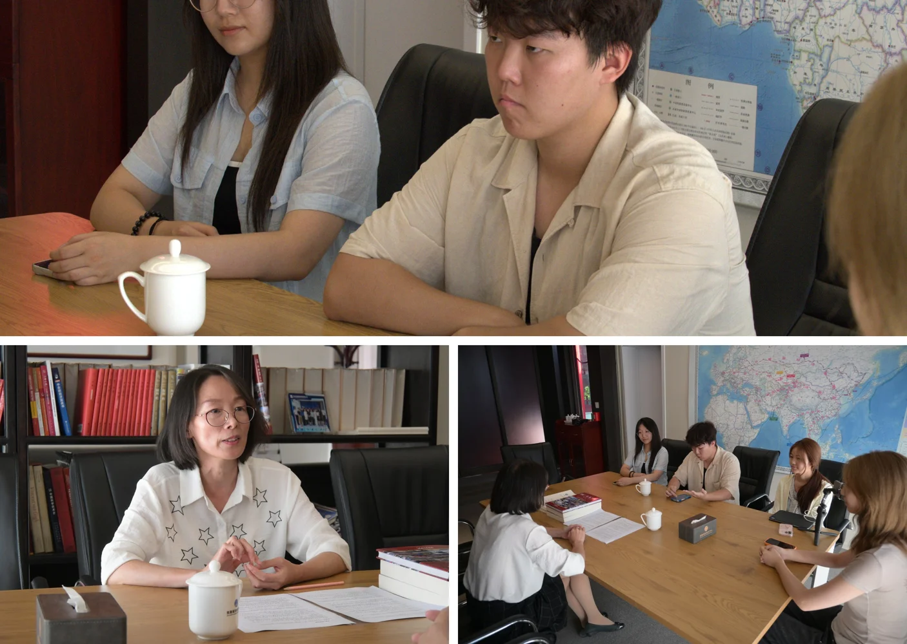
我们在座谈中讨论高质量共建“一带一路”、技术与标准、品牌、本地化经营及风险，将这些议题与前一天的企业访谈相互参照。
易智唯思智能科技有限公司提供了从人工智能研发到企业服务的实践样本。
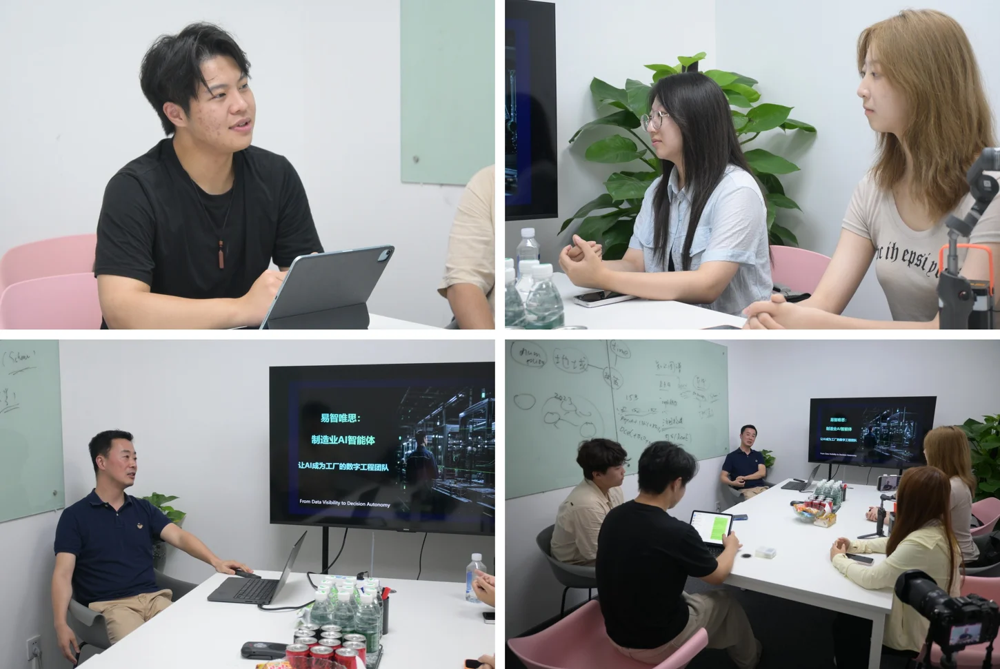
我们围绕质量、工艺、设备和研发等岗位追问工业智能体如何落地，重点讨论行业知识、数据基础、结果可靠性与过程追溯。
哈尔滨思哲睿智能医疗设备股份有限公司的手术机器人，为团队提供了高端医疗装备的观察场景。

我们从研发转化追问到设计验证、精密制造与质量合规，沿产品生命周期梳理技术成果进入实际应用需要经过的环节。
饮料制造呈现出连续、标准化的生产特点。这里使团队得以将不同制造行业的质量管理放在一起比较。
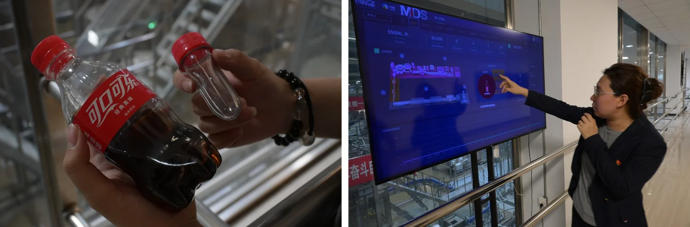
我们围绕生产管理、卫生质量、批次追溯和库存配送开展调研，关注过程数据如何服务稳定生产与交付。
哈尔滨行程的最后一站是云枫汽车。相较于北京的整车制造基地，这里提供了地方零部件企业的视角。
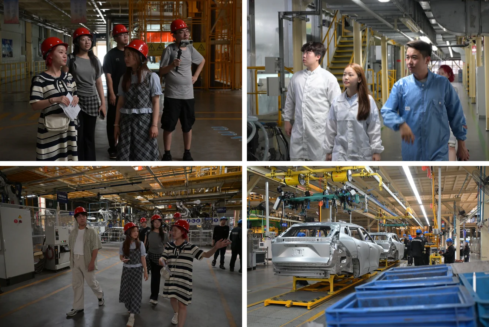
我们走访生产现场，围绕零部件工艺、排产、质量和供应衔接展开观察，补充对整车产业链上不同企业分工的理解。